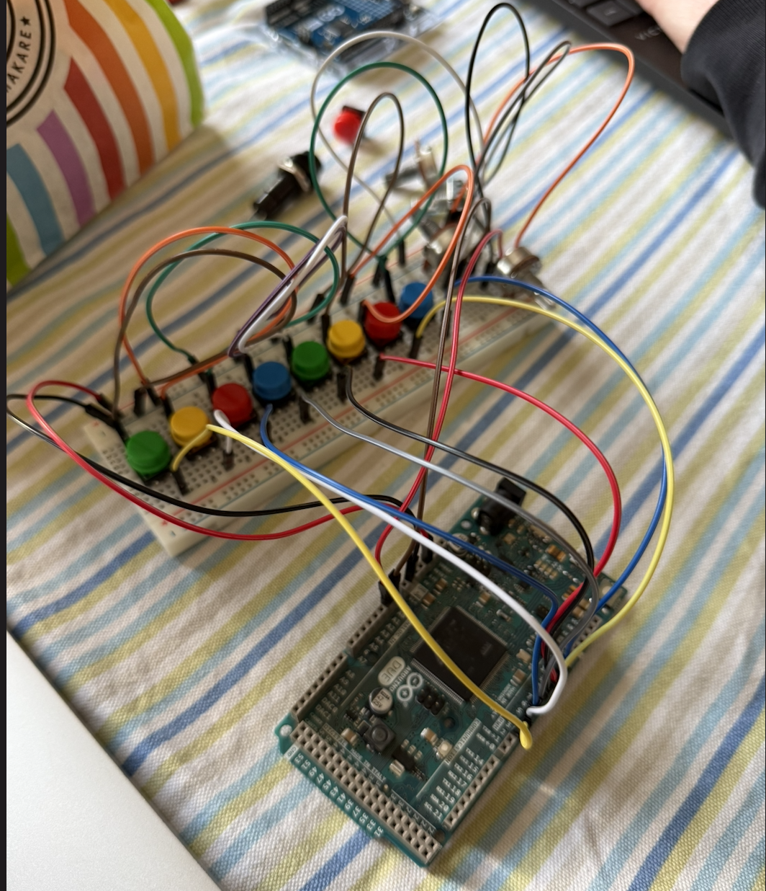
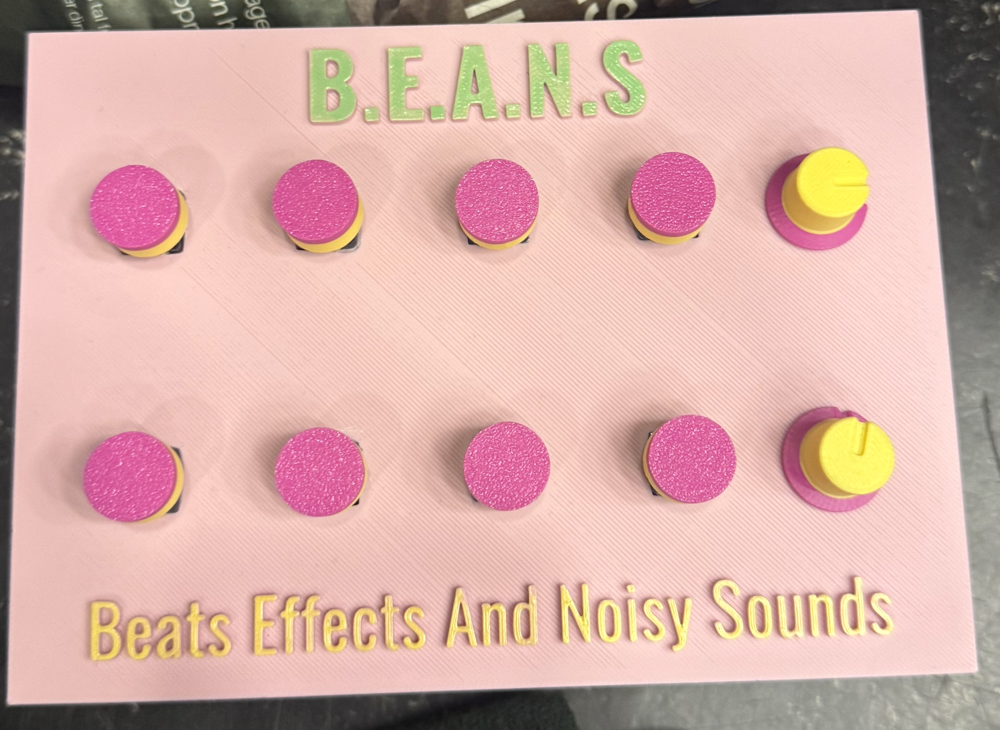
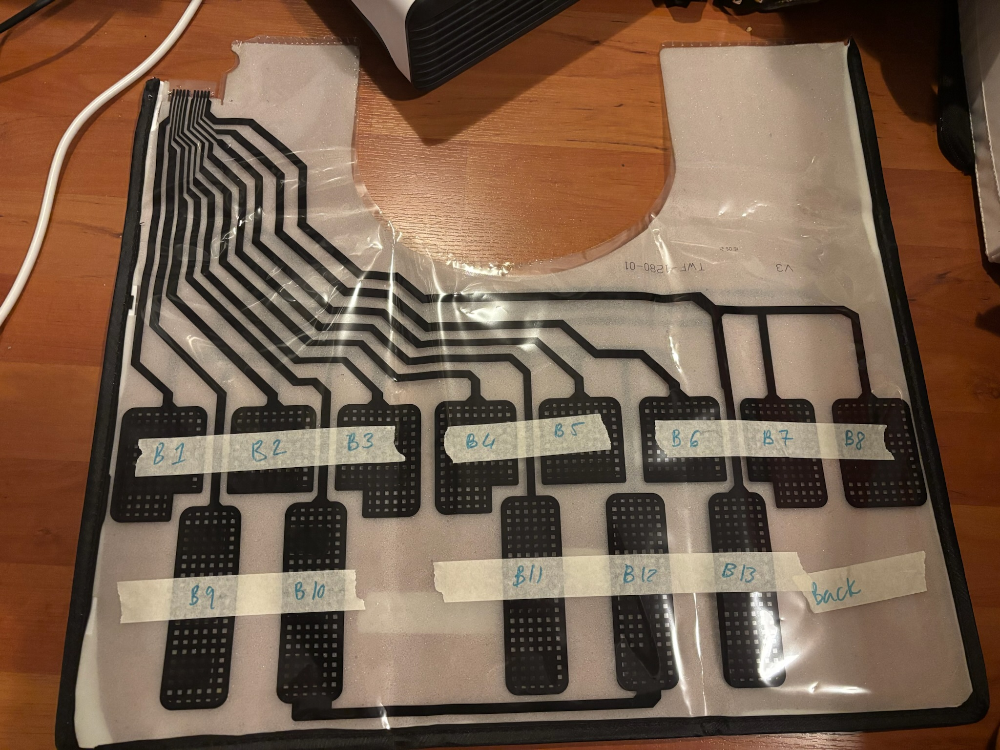
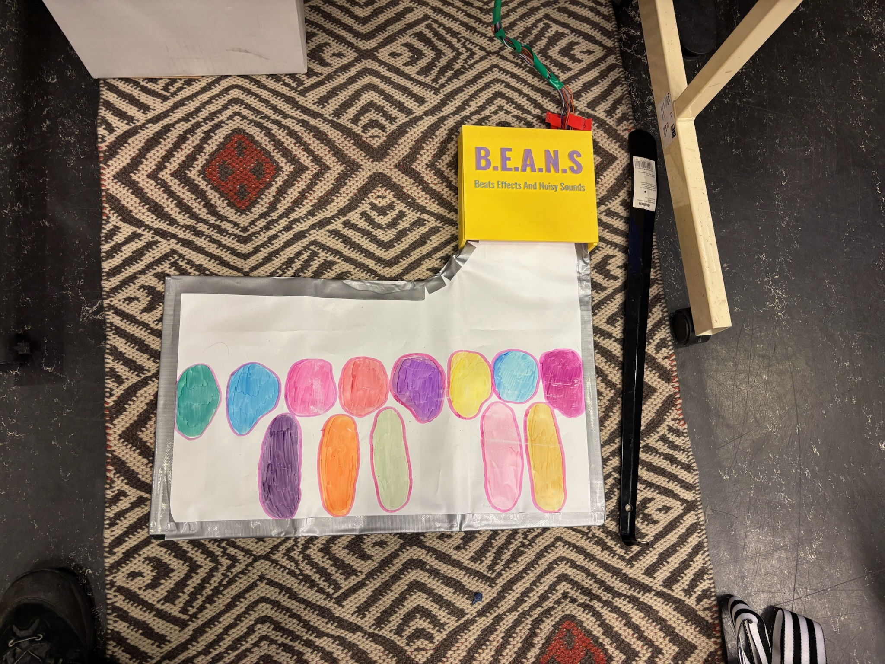
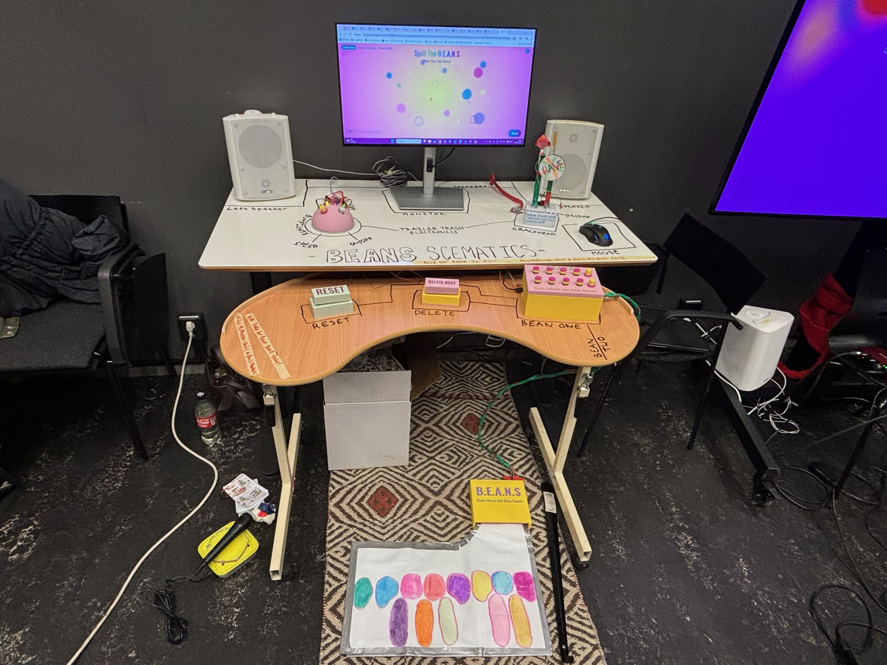

Pick a beat
Press a button or piano key to add its beat to the mix.
A handmade rave machine
Beats, Effects And Noisy Sounds
Push buttons. Stack beats. Make a beautiful mess.
Meet the beansThe Hardware
B.E.A.N.S. (Beats, Effects And Noisy Sounds) is an interactive music project that invites visitors to make their own rave. We built two handmade controllers: BEAN ONE has eight buttons and two knobs, while BEAN TWO uses 13 recycled switches from a piano floor mat. Pressing the buttons or keys adds beats to the mix, and the knobs change the pitch and speed. The webpage responds with changing visuals that grow more intense as more beats are added. Two handmade light pieces, Bumfights and Crackhead, bring the project’s playful, chaotic energy into the space. B.E.A.N.S. brings physical interaction, sound, visuals, and light together in one hands-on experience.





Curious to see?
Watch the buttons, beats and visuals come together!!
Instructions
Press a button or piano key to add its beat to the mix.
Combine beats and build your own little rave.
Turn the potentiometers to change pitch and speed.
More beats make the sound and visuals more intense and chaotic. And the most inportnt ENJOY
As designer
I wanted B.E.A.N.S. to invite people to experiment, not just look at it. Its bright colors, unusual controllers, and changing visuals make the experience playful and a little unpredictable. Alice and I shaped B.E.A.N.S. through shared ideas, conversations, and experiments. We kept building on each other’s suggestions until the controllers, visuals, and sound felt like parts of the same playful world. For me, B.E.A.N.S. shows how design can make technology feel specia and engaging .